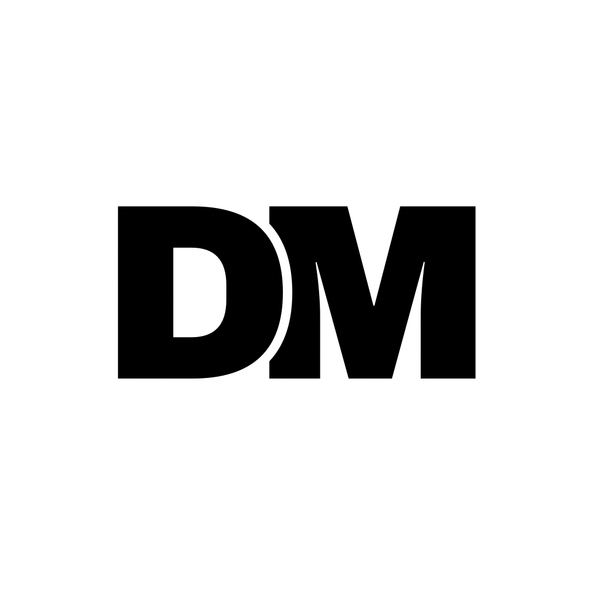
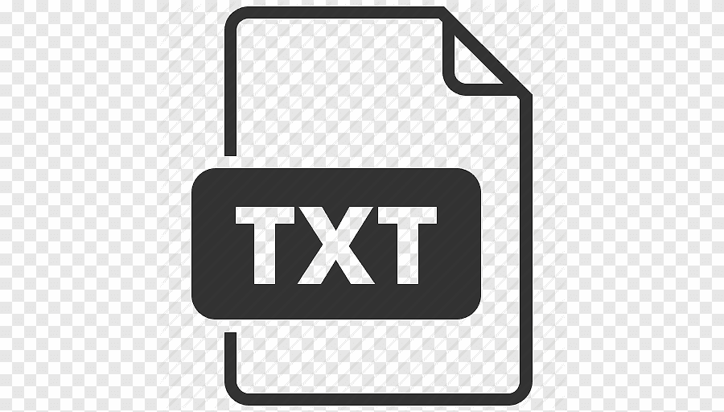
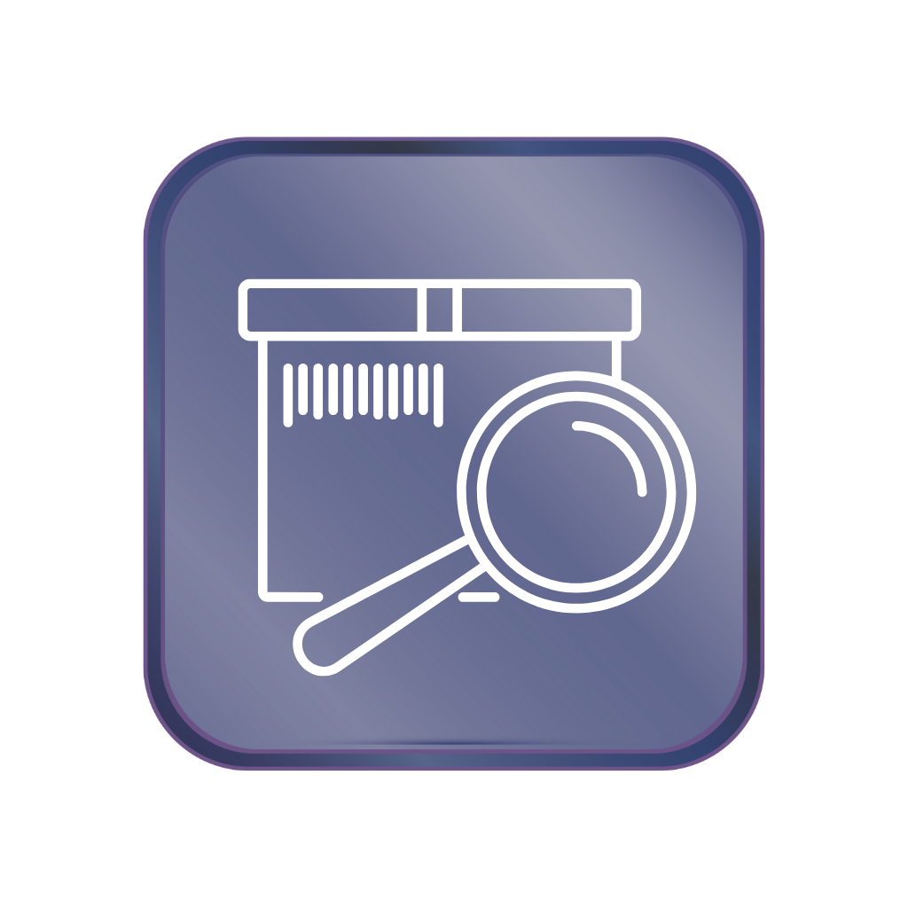
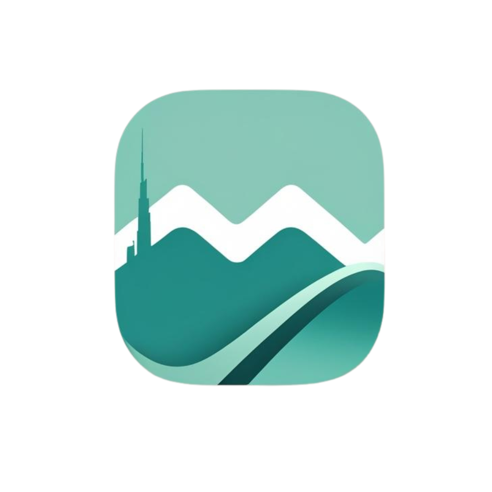
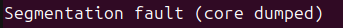
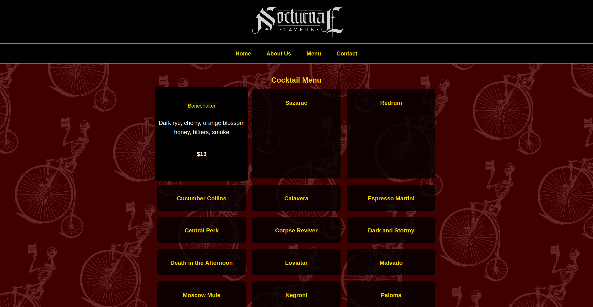
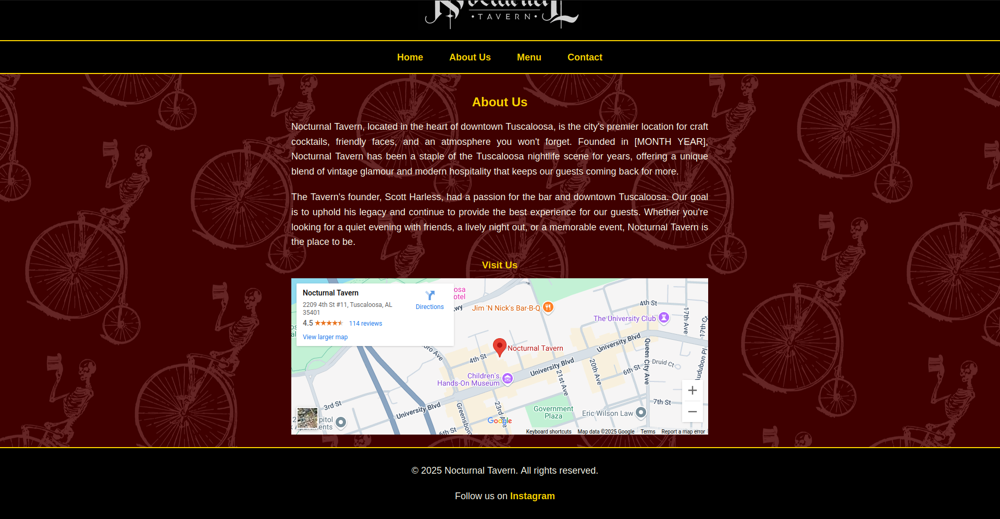

README.txt
NVNTRY
Movemint
Welcome to my portfolio website!
I'm Dausen Mason, a developer with a passion for building cool projects.
This site is designed like a virtual desktop, where you can navigate through
various elements as if it were a real OS.
I highly recommend viewing this site on a desktop device, and activating fullscreen
mode while using the site.
Features:
- A work in progress terminal (with limited functionality currently).
- Desktop icons for the terminal and other "apps".
- A dynamic taskbar with links to my socials and a working clock.
- A settings panel to customize your experience.
- A start menu with options to view my projects, resume, contact info, and settings.
- A wallpaper selector (found in settings).
- Draggable windows (this seems like a basic feature, but took more time than I'm
proud to admit to implement, so i'm putting it here).
Future Features:
- More terminal commands and functionality.
- More start menu options.
- A projects folder to showcase my work.
- More apps to be included on the desktop.
- Mobile friendly version of the site.
- Accessibility features (colorblind mode, screen reader support, etc.)
Feel free to explore!
Shoutout to Callum for the desktop icon designs, Windows XP for the incredible background image,
and Netlify for not charging me a ridiculous amount of money per month to host (looking at you, AWS).



 My favorite part of the job, having downtime to goof off in the pool.
---------------------------------------------------------------------------------------------------------------------------------------------------------------
May 2019-Current: Host / Server / Bartender / Shift Lead at Central Mesa-
-Worked every position in the front of house at a local restaurant.
-Ensured guest satisfaction, learned food and drink menus, collaborated with back of house employees.
-Supervised front of house operations, counted money, generated sales reports.
My favorite part of the job, having downtime to goof off in the pool.
---------------------------------------------------------------------------------------------------------------------------------------------------------------
May 2019-Current: Host / Server / Bartender / Shift Lead at Central Mesa-
-Worked every position in the front of house at a local restaurant.
-Ensured guest satisfaction, learned food and drink menus, collaborated with back of house employees.
-Supervised front of house operations, counted money, generated sales reports.
 Worked events such as the West Alabama Food and Wine Festival
Worked events such as the West Alabama Food and Wine Festival
 Participated in fundraisers such as our annual House Swap (Back of house works front of house, vice versa).
Participated in fundraisers such as our annual House Swap (Back of house works front of house, vice versa).
 Featured several times in promotional content on social media
---------------------------------------------------------------------------------------------------------------------------------------------------------------
January 2023-Current: Bartender / General Manager at Nocturnal Tavern
-Managed a staff of 10-15 employees.
-Ensured guest satisfaction in a fast-paced, rapidly changing environment
-Worked with vendors and owners to reduce costs, design new menus, and maintain appropriate staffing
Featured several times in promotional content on social media
---------------------------------------------------------------------------------------------------------------------------------------------------------------
January 2023-Current: Bartender / General Manager at Nocturnal Tavern
-Managed a staff of 10-15 employees.
-Ensured guest satisfaction in a fast-paced, rapidly changing environment
-Worked with vendors and owners to reduce costs, design new menus, and maintain appropriate staffing


 As I was growing up, I fell in love with playing video games and being out in the woods (there wasn't much else to do in rural Alabama).
My passion for video games led me to building a PC at the age of 13 with birthday and Christmas money from the past couple of years. Although
this thing was nothing special, it opened the door to a whole new passion. What started out as modding Minecraft and Left 4 Dead 2 eventually
turned into a passion for technology, understanding how it works and manipulating it to make my own life easier.
As I was growing up, I fell in love with playing video games and being out in the woods (there wasn't much else to do in rural Alabama).
My passion for video games led me to building a PC at the age of 13 with birthday and Christmas money from the past couple of years. Although
this thing was nothing special, it opened the door to a whole new passion. What started out as modding Minecraft and Left 4 Dead 2 eventually
turned into a passion for technology, understanding how it works and manipulating it to make my own life easier.
 My first PC build in July of 2014. This thing had an NVIDIA GT420 in it!
When I started college, I had friends who were electrical engineering majors, so naturally I followed them in their studies. After a year of
EE classes and me still having close to 0 understanding on how to solve a circuit, I decided it was time for a pivot. I remembered taking
CS100, which was required for EE majors, and how rewarding writing and debugging software felt, and decided to swap to computer science.
After several years of grinding classes (and over a year of not taking them due to a pandemic), I earned my degree in computer
science and am now looking to change careers from the service industry to software development.
Thanks for taking the time to check out my story and my portfolio! Here's some more random pictures of me and some loved ones!
My first PC build in July of 2014. This thing had an NVIDIA GT420 in it!
When I started college, I had friends who were electrical engineering majors, so naturally I followed them in their studies. After a year of
EE classes and me still having close to 0 understanding on how to solve a circuit, I decided it was time for a pivot. I remembered taking
CS100, which was required for EE majors, and how rewarding writing and debugging software felt, and decided to swap to computer science.
After several years of grinding classes (and over a year of not taking them due to a pandemic), I earned my degree in computer
science and am now looking to change careers from the service industry to software development.
Thanks for taking the time to check out my story and my portfolio! Here's some more random pictures of me and some loved ones!
 My girlfriend Callum and I in Dublin, Ireland.
My girlfriend Callum and I in Dublin, Ireland.
 Our dog Fred and I.
Our dog Fred and I.
 Proof that we clean up pretty well.
Proof that we clean up pretty well.
Name: Dausen Mason
Email: dausenmason@yahoo.com
GitHub: github.com/dausenm
LinkedIn: linkedin.com/in/dausenmason
Welcome to Settings! Customize your experience below.